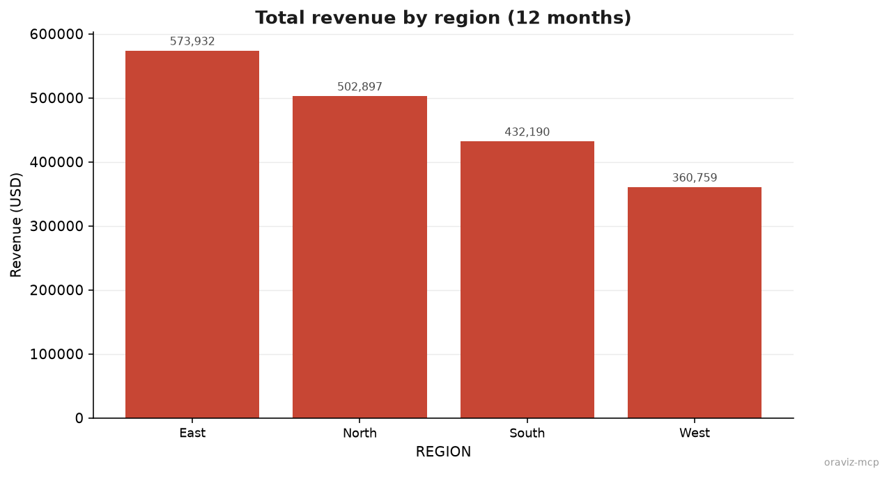
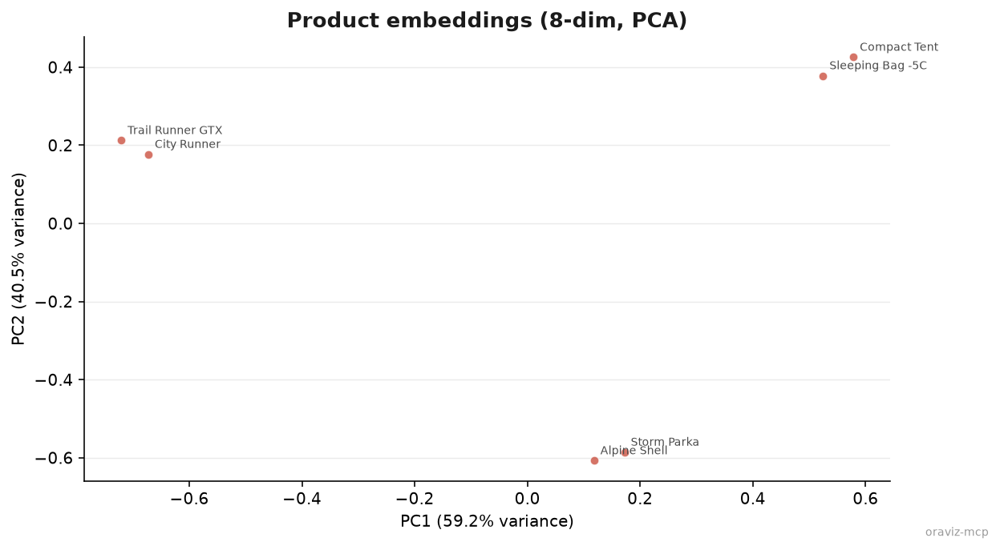
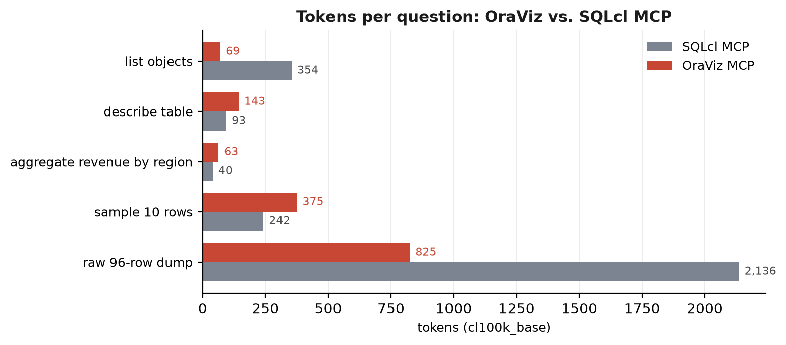
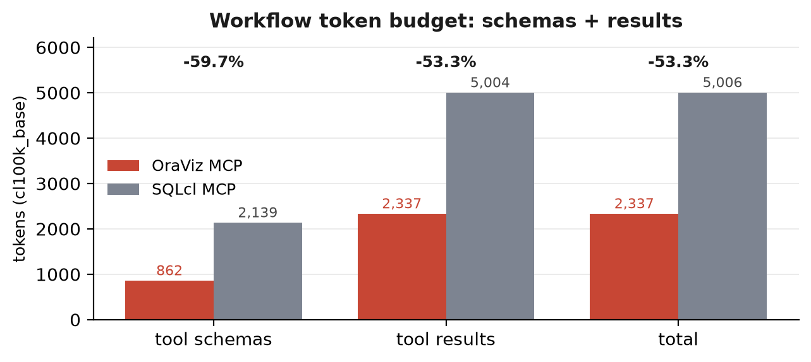

SELECT region, SUM(revenue) AS total_revenue
FROM oraviz.sales_demo
GROUP BY region
ORDER BY total_revenue DESC;MCP server for Oracle AI Database 26ai
Ask your Oracle data.
Get a compact table, a chart, and a token bill you can plan for.
OraViz is a minimal, visualization-first MCP server: seven read-oriented tools and a context contract on every result — preview caps with honest truncation markers, cells bounded at 500 characters, and charts rendered as MCP image content. Benchmarked against the official SQLcl MCP server on the same Oracle 26ai Free container before security hardening.
Measurements and charts are historical snapshots. Current deployment boundaries, authentication requirements, and limits are documented in SECURITY.md.
- 53.3%
- fewer tokens for the five-question workflow, schemas included
- 862 vs 2,139
- tokens of tool schemas, read once per session
- 123 tok + PNG
- text cost of answering the comparison question with a chart
4 row(s) | columns: REGION, REVENUE
| REGION | REVENUE |
|--------|----------|
| East | 573932 |
| North | 502897 |
| South | 432190 |
| West | 360759 | context contract active · preview cap 25 rows · cells ≤ 500 chars

create_chart from the query below — returned as an image content block plus a short text preview.01 — The demo
One query, end to end
Every step below is a real exchange between an MCP client and OraViz against an Oracle AI Database 26ai Free container: the SQL the agent wrote, the result it received, and the chart it rendered.
4 row(s) | columns: REGION, REVENUE
| REGION | REVENUE |
|--------|---------|
| East | 573932 |
| North | 502897 |
| South | 432190 |
| West | 360759 |
02 — The measurements
53.3% fewer tokens than the official MCP server
Identical questions to OraViz and to the official Oracle SQLcl 26.1 MCP server
(sql -mcp), same database, same data. Counted with tiktoken:
tool schemas read once per session, plus every tool result needed to answer.
Historical results, unchanged since the original experiment. Current schemas, limits, and LOB behavior differ; these values have not been recomputed for the hardened server.
−53.3%
workflow tokens, schemas included — 2,337 vs 5,006. The savings concentrate where context would otherwise grow: tool schemas (−59.7%), schema discovery (−80.5%), and an unaggregated 96-row dump (−61.4%).
- −80.5% listing schema objects: 69 vs 354 tokens
- −61.4% full 96-row dump: 825 vs 2,136 tokens
- −59.7% tool schemas: 862 vs 2,139 tokens
- +55% ten-row sample framing — bounded by design, not by data
- 123 tok chart path: aggregate rendered to PNG, no SQLcl equivalent


03 — The surface
Seven tools, each with one job
Small schemas are a per-session cost every agent pays. OraViz keeps them short and pushes the aggregation to SQL, where the database already operates.
execute_queryOne bounded
markdownSELECT/WITHstatement, returned as a compact markdown table with truncation metadata.profile_tablePer-column counts, distinct values, min/max and averages — enough to choose a chart without fetching rows.
dictcreate_chartBar, line, area, scatter, pie, histogram, and vector (PCA) renderings returned as a PNG plus a short preview.
imagelist_tablesTables and views in the current schema, capped with an explicit truncation marker.
markdownget_table_schemaColumns, types, nullability, and primary-key flags, escaped for safe markdown.
markdownsample_table_dataThe first rows of a table with a sample note — useful before writing an aggregate.
markdownget_table_detailsTablespace and optimizer statistics, optionally with an exact row count.
dict
04 — Run it
Point any MCP client at it
Thin-mode python-oracledb means no Oracle client libraries to install. Works with
Claude Code, Crush, Cursor, or any compliant client over stdio or HTTP.
Run the server
uvx --from git+https://github.com/jasperan/oraviz-mcp@REVIEWED_COMMIT_SHA oraviz-mcpReplace the commit placeholder with a reviewed revision. Use a dedicated reader
account; inject ORACLE_PASSWORD into the MCP host's protected runtime environment.
Stdio uses local OS trust. All HTTP/SSE entry paths require configured JWT authentication,
including loopback; deployments also need TLS and private networking.
Register it with your client
{
"mcpServers": {
"oraviz": {
"command": "uvx",
"args": ["--from", "git+https://github.com/jasperan/oraviz-mcp@REVIEWED_COMMIT_SHA", "oraviz-mcp"],
"env": {
"ORACLE_USER": "oraviz_reader",
"ORACLE_DSN": "localhost:1530/FREEPDB1"
}
}
}
}Docker image, demo schema, and the full environment reference live in the README. Current security controls and operator responsibilities are in SECURITY.md.